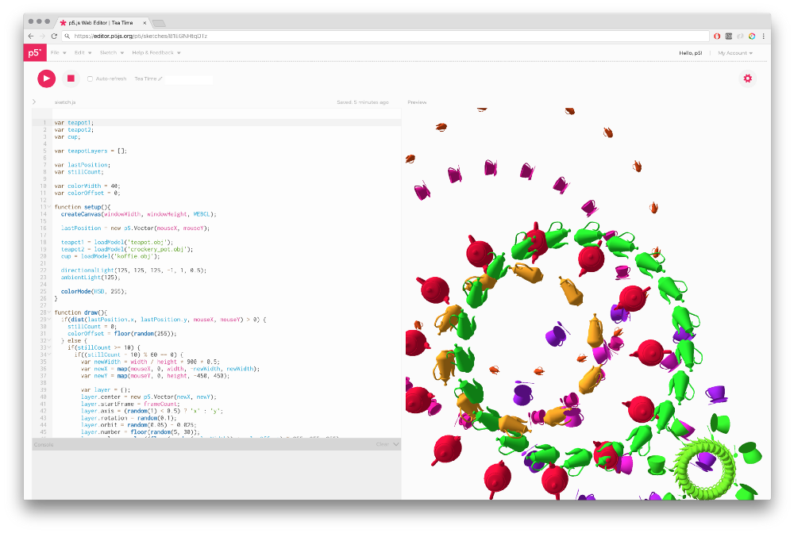

Intro to programming with p5.js
Are you ready to discover programming? Programming is everywhere, from your coffee machine to space rockets. Every day, we are interacting with dozens of objects that use at least a little bit of code. But what does coding really mean? In this module, you will learn the basics of programming with JavaScript and p5.js!
Quiz
Quiz
Watch the video above first, then answer the quiz to make sure you understand the main notions. Some questions may need to look up elsewhere through a quick Internet search!
This quiz is mandatory. You can answer this quiz as many times as you want, only your best score will be taken into account. Simply reload the page to get a new quiz.
The due date has expired. You can no longer answer this quiz.
Assignment
Make it happen!
This assignment is mandatory. If you update your work but the link doesn't change, you don't need to re-submit it.
Tools
JavaScript is a programming language widely used on the web for scripting behavior and interaction within a web page. Don't be afraid, it's a fairly easy programming language (compared to many others).
p5.js is a JavaScript library for begginers to discover programming through artistic works such as graphic design, sound design, game design… and more!
editor.p5js.org, a web editor for p5.js, a JavaScript library with the goal of making coding accessible to artists, designers, educators, and beginners.
Project
Use p5.js to make a drawing machine. It has to feature at least:
- two 2D shapes
- some colors (not only black and white)
- a way for the user to switch between different colors and/or shapes
You can log in to p5.js with your GitHub account. If you don't have a GitHub account yet, go to GitHub and create an account. When that's done, log in to the p5.js web editor and create a new sketch.
Have a look at the p5.js reference to learn how to use differents shapes, colors, and detect user inputs. You can use randomness, and add any interaction you want. Don’t hesitate to write instructions on how to use your drawing machine, either in the drawing or in the code (with comments). When you're done, don't forget to submit the link to your p5.js sketch below!
To write a comment in your JavaScript code, use two forward slashes (//) like shown below. Commented lines will not be executed by the JavaScript engine (it ignores them), which means it's also a great way to temporarily disable a chunk of code without having to entirely delete it.
// comments starts with two forward slashes (//)
function setup() {
// create our canvas element
createCanvas(400, 300);
}
function draw() {
// draw some shapes
// rect(mouseX, mouseY, 20, 20);
ellipse(mouseX, mouseY, random(10, 50));
}
Submit
The due date has expired. You can no longer submit your work.
Going further
Definitions
Programming is the process of designing an executable computer program for accomplishing a specific computing task. It generally involves coding in a specific programming language by writing down lines of code. Don't mix up programming and development, which rather refers to the larger process of testing, debugging (removing bugs), documenting code, managing the program's environment and so on.
Many programming languages exist for different purposes and personnal preferences of developers. The most famous ones include Python, C (along with C++ and C#), Java, PHP, and many more. JavaScript is one of the three languages of the web with HTML and CSS, and therefore can be executed by any browser. Watch out, HTML and CSS are not programming languages but respectively markup and style sheet languages.
JavaScript was originally created in 1995 at Netscape, a very popular web browser back in the 90s. In the beggining, it only had client-side uses, which means it was only exectued by one's browser. However, the next year, Netscape introduced an implementation of the language for server-side scripting. Nowadays, many more implementation have been introduced, such as the widely-used Node.js.
A JavaScript library is a file (or a set of multiple files) of pre-written JavaScript, which allows for easier development of JavaScript-based applications. It allows you to write down working code quicker, starting with a basis that you pick depending on your needs. Basically, a library consists in a set of helpful pre-defined functions and variables that you can use on-the-fly without having to build them from scratch.
p5.js is a JavaScript library that offers beginners the opportunity to learn to code through a graphic approach and a simple programming language, so that people like artists, designers, curious students and others can experiment and shape their ideas on their own. You will find many resources to guide you in the p5.js reference.
Unlike what is shown in this module, programming is usually done using an IDE or a text editor, which is a computer program that edits plain text. You will find examples of text editors that you may download to refine your programming skills in the "Tools" list below.
Tools
- Visual Studio Code, a free and powerful text editor
- Atom, another free and customizable text editor
Resources
- Code! Programming with p5.js is a youtube course by Daniel Shiffman, that focuses on the fundamentals of computer programming
- CodeCademy, an online code course platform
- Stackoverflow, a platform for exchange between developers. Look there first when you encounter a code-related issue!